Picturebooks: Beyond the Borders of Art, Narrative and Culture
Evelyn Arizpe, Maureen Farrell and Julie McAdam (eds.)
Book detailsStudies picturebooks across the boundaries of visual art, literature and cultural history.
Children’s literature, literacy and childhood
Open the homepage and press Ctrl+D on Windows or Command+D on Mac. On a phone or tablet, use Add Bookmark in the browser’s Share or menu button.
Explore a selective bibliography of academic books on children’s literature, picturebooks and related fields. Within each topic, books are listed by publication year, newest first.
To recommend a book for consideration, please contact me and, if possible, provide a review copy. All recommendations are subject to editorial review.

75 books
Evelyn Arizpe, Maureen Farrell and Julie McAdam (eds.)
Book detailsStudies picturebooks across the boundaries of visual art, literature and cultural history.
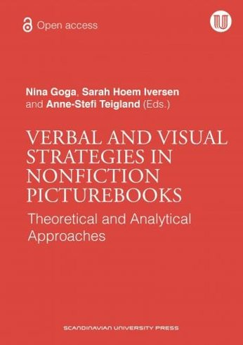
Nina Goga, Sarah Hoem Iversen and Anne-Stefi Teigland (eds.)
Book detailsPresents methods for analysing how nonfiction picturebooks combine verbal and visual forms.
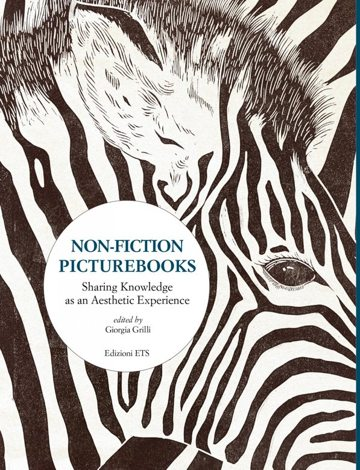
Giorgia Grilli (ed.)
Book detailsStudies how nonfiction picturebooks make the exchange of knowledge an aesthetic experience.
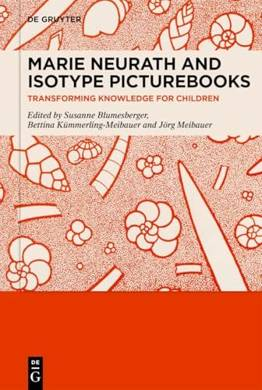
Susanne Blumesberger, Bettina Kümmerling-Meibauer and Jörg Meibauer (eds.)
Book detailsExamines how Marie Neurath’s visual-information picturebooks communicate knowledge to children.

Barbara Bader
A historical survey of American picturebooks and the interaction of words, images and design.
Book details
Perry Nodelman
Explains how the visual conventions of picturebooks shape narrative interpretation.
Book details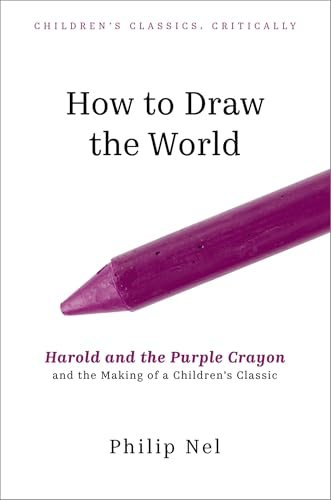
Philip Nel
A close study of Crockett Johnson’s classic, examining picturebook design, colour, creative process and the relationship between art and childhood.
Book detailsSara Pankenier Weld
Reads early Soviet picturebooks in the context of the artistic networks and pressures of censorship that shaped them.
Book details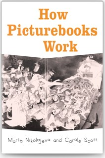
Maria Nikolajeva and Carole Scott
Examines the contributions of verbal narration and visual composition to picturebook meaning.

Bettina Kümmerling-Meibauer (ed.)
Book detailsA collection examining how picturebooks construct representation and narrative through the relationship between words and images.

Teresa Colomer, Bettina Kümmerling-Meibauer and Cecilia Silva-Díaz (eds.)
Book details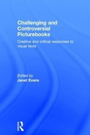
Janet Evans (ed.)
Book detailsExplores how challenging picturebooks invite critical reading, interpretation and classroom discussion.
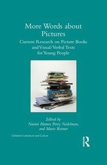
Naomi Hamer, Perry Nodelman and Mavis Reimer (eds.)
Essays on visual and verbal texts for young readers, revisiting questions raised by Nodelman’s earlier work.
Book details
David Lewis
Explores word–image relationships and the flexible forms of contemporary picturebooks.

Sandra L. Beckett
Studies how picturebooks cross age boundaries through art, intertextuality and experimentation.
Book detailsSmiljana Narančić Kovač and Nikola Novaković (eds.)
Studies the relation between fiction and reality in picturebooks. The publisher lists a 2027 copyright year.
Book detailsPerry Nodelman (ed.)
Critical essays on individual picturebooks and the techniques that shape their visual narratives.
Book detailsMałgorzata Cackowska, Hanna Dymel-Trzebiatowska and Jerzy Szyłak (eds.)
Polish-language introduction to picturebook terminology, forms and methods of interpretation.
Book details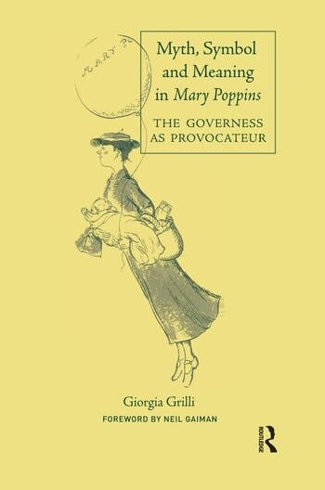
Giorgia Grilli
Book detailsStudies the symbolism and literary origins of P. L. Travers’s Mary Poppins.
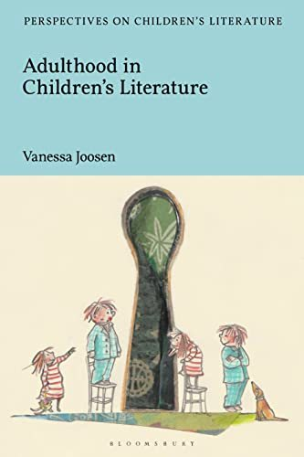
Vanessa Joosen
Book detailsExplores representations of adulthood and age relations in literature for children.
Anna Kérchy and Stijn Praet (eds.)
Book detailsResearch on experimental and innovative transformations of fairy tales.
Smiljana Narančić Kovač
Book detailsA literary study of the tripartite structure of Gundulić’s poem; included as part of the scholar’s bibliography.
Berislav Majhut, Smiljana Narančić Kovač and Sanja Lovrić Kralj (eds.)
Book detailsScholarly essays on the literary and cultural significance of the character Hlapić.
Bettina Kümmerling-Meibauer and Farriba Schulz (eds.)
Book detailsConsiders political change, democratic systems and authoritarianism in modern children’s literature.
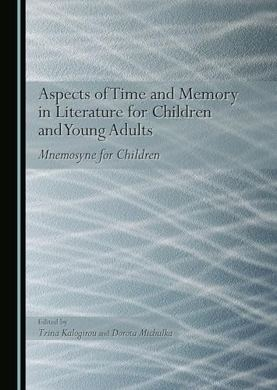
Tzina Kalogirou and Dorota Michułka (eds.)
Book detailsInternational research on how literature for young people represents time, memory and remembrance.
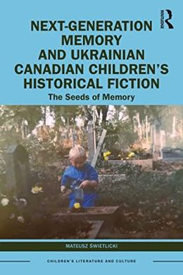
Mateusz Świetlicki
Book detailsStudies memory, displacement and Ukrainian Canadian identity in historical fiction for young readers.
Elżbieta Jamróz-Stolarska, Mateusz Świetlicki and Agata Zarzycka (eds.)
Book detailsExplores debates and contested themes in children’s literature across national and cultural contexts.
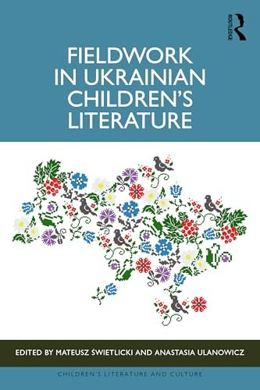
Mateusz Świetlicki and Anastasia Ulanowicz (eds.)
Book detailsA scholarly collection tracing Ukrainian children’s literature from its historical roots to contemporary writing.
Mateusz Świetlicki, Dorota Michułka and Zofia Zasacka (eds.)
Book detailsExamines how children’s literature canons develop and change across Slavic cultures; the e-book is open access.
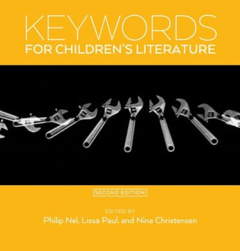
Philip Nel, Lissa Paul and Nina Christensen (eds.)
An international collection examining key concepts and debates in children’s literature scholarship.
Book detailsSara Pankenier Weld
Traces how children’s drawings, language and perspectives informed formal experiments in Russian avant-garde art and writing.
Book detailsRussian translation by Irina Znayesheva · Academic Studies Press, BiblioRossica · 2023 · Hardcover ISBN 9798887193472. Book details
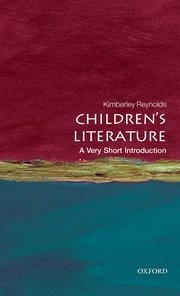
Kimberley Reynolds
Book detailsAn accessible introduction to the history, forms and cultural significance of children's literature.
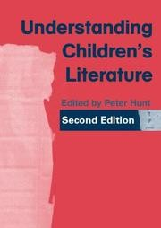
Peter Hunt (ed.)
Book detailsIntroduces major critical approaches to children's literature and ways of interpreting texts for young readers.
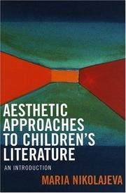
Maria Nikolajeva
Book detailsIntroduces aesthetic and formal approaches to the interpretation of children's literature.
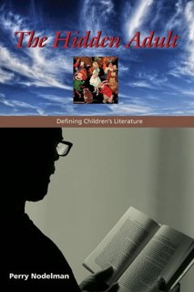
Perry Nodelman
Examines the adult knowledge and assumptions that shape texts written for children.
Book details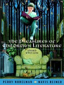
Perry Nodelman and Mavis Reimer
Third edition of an introduction to reading and interpreting children’s literature.
Book details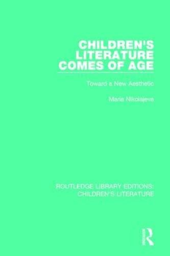
Maria Nikolajeva
Examines children’s literature through literary theory, genre and narrative form.
Book detailsJohn Stephens
Examines the role of narrative language and ideology in children’s fiction.
Book details
Sandra L. Beckett
Traces fiction read across child and adult audiences in different traditions and periods.
Book details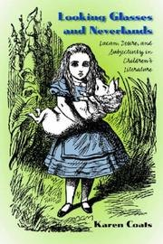
Karen Coats
A Lacanian study of how children’s texts negotiate desire and subjectivity.
Book details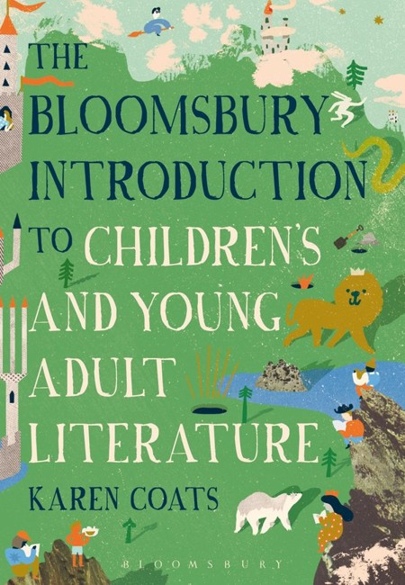
Karen Coats
Introduces critical approaches to writing for young readers across genres and formats.
Book details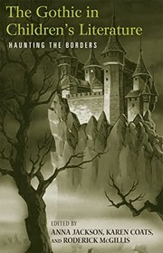
Anna Jackson, Roderick McGillis and Karen Coats (eds.)
Investigates how Gothic conventions test the boundaries of literature written for children.
Book detailsAnna Jackson and Karen Coats (eds.)
Considers how contemporary texts rethink Gothic forms and ideas about childhood.
Book detailsBettina Kümmerling-Meibauer and Anja Müller (eds.)
Examines how canons for young readers are made and revised, including a chapter on the Polish canon co-authored by Dorota Michułka.
Book details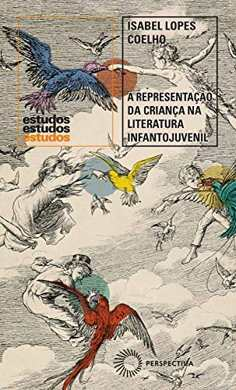
Isabel Lopes Coelho
Portuguese-language comparative study of how three classics portray childhood. Coelho is a convenor of the 2027 IRSCL Congress in São Paulo.
Book details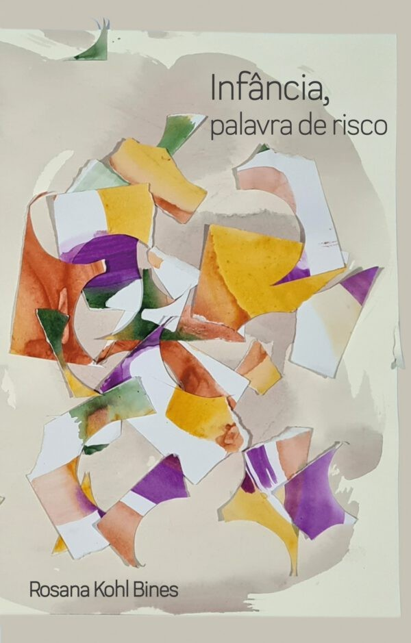
Rosana Kohl Bines
Portuguese-language essays connecting childhood with literature and the visual arts. Bines is a convenor of the 2027 IRSCL Congress in São Paulo.
Book detailsJustyna Deszcz-Tryhubczak
Studies radical fantasy and young readers’ engagement with solidarity and oppression.
Book details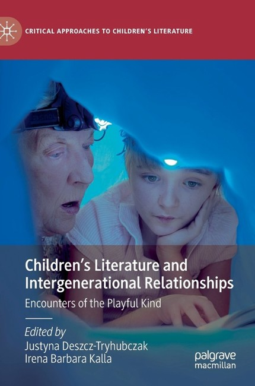
Justyna Deszcz-Tryhubczak and Irena Barbara Kalla (eds.)
Considers how literature encourages play and imaginative exchanges across generations.
Book detailsJustyna Deszcz-Tryhubczak and Zoe Jaques (eds.)
Examines how books and films for young audiences imagine relationships of mutual support across generations.
Book details
Justyna Deszcz-Tryhubczak and Irena Barbara Kalla (eds.)
Studies the power relations and possibilities created when children and adults play together in and through literature.
Book detailsMarek C. Oziewicz
Compares how four fantasy series use myth to imagine human relations and ethical responsibilities.
Book details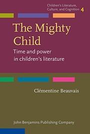
Clémentine Beauvais
A theoretical study of the relationship between adults’ authority and children’s future possibilities. Beauvais uses time and power to reconsider central assumptions in children’s literature criticism.
Book detailsMeyer Howard Abrams
A foundational account of changing literary theories, including the shift from imitation to expressive accounts of art.
Andrew Bennett and Nicholas Royle
Introduces literary criticism through key concepts, interpretive questions and theoretical approaches.
Jonathan Culler
Explores how signs, literary conventions and deconstructive reading shape interpretation.
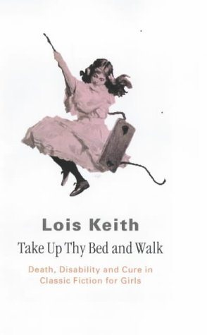
Lois Keith
Examines disability, illness and narratives of cure in classic fiction for girls.
George Orwell
Orwell reflects on the motivations, politics and experiences that shape his writing.
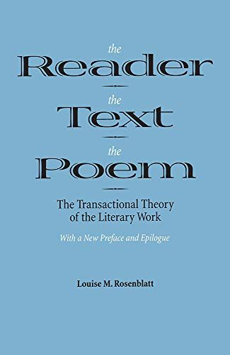
Louise Michelle Rosenblatt
Develops a transactional account of reading in which meaning emerges through the reader's encounter with a text.
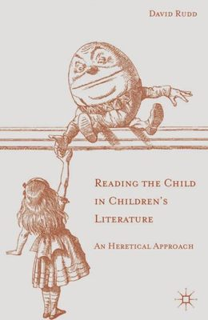
David Rudd
Introduces and examines reading the child in children’s literature: An heretical approach, offering perspectives relevant to children’s literature theory and criticism.
Roland Barthes · Translated by Annette Lavers
Essays analysing how everyday cultural images and practices become vehicles for ideology.
Clare Hanson and Susan Watkins (eds.)
Introduces and examines history of British Women’s Writing, 1945–1975, offering perspectives relevant to children’s literature theory and criticism.
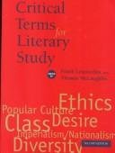
Frank Lentricchia and Thomas McLaughlin (eds.)
Introduces and examines critical Terms for Literary Study, offering perspectives relevant to children’s literature theory and criticism.
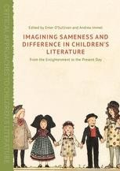
Emer O’Sullivan and Andrea Immel (eds.)
Introduces and examines imagining Sameness and Difference in Children’s Literature, offering perspectives relevant to children’s literature theory and criticism.
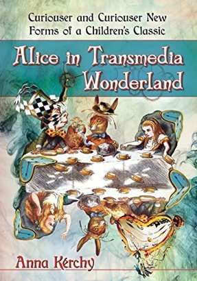
Anna Kérchy
Book detailsA study of Alice adaptations and transmedia storytelling.
Smiljana Narančić Kovač
Croatian-language study of the picturebook as narrative, also known as One Story – Two Narrators.
Book details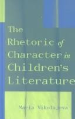
Maria Nikolajeva
Examines techniques of character construction in literature for young people.
Book details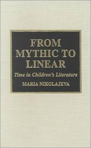
Maria Nikolajeva
Studies how temporal structures shape the experience of reading children’s literature.
Book details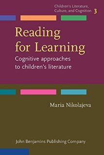
Maria Nikolajeva
Applies cognitive literary studies to children’s reading and learning.
Book details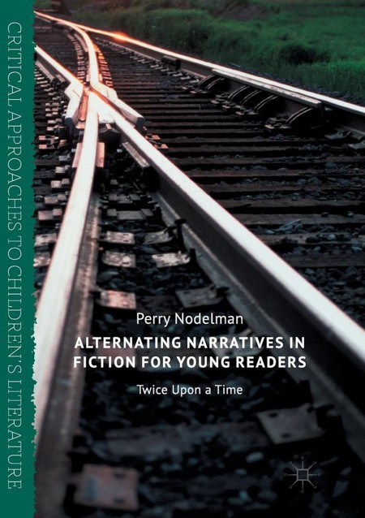
Perry Nodelman
Examines works that alternate between narrators or narrative strands and the reading practices they invite.
Book detailsH. Porter Abbott
Introduces and examines cambridge introduction to narrative, offering perspectives relevant to narratology and cognitive literary studies.
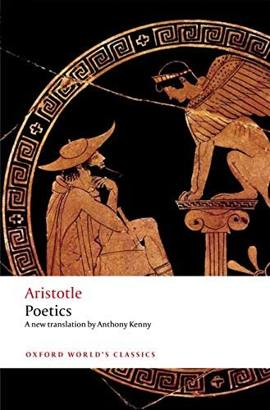
Aristotle · Translated by Anthony Kenny
A foundational discussion of dramatic and narrative art, including plot, character and literary form.
Mieke Bal
Introduces and examines narratology: Introduction to the theory of narrative, offering perspectives relevant to narratology and cognitive literary studies.
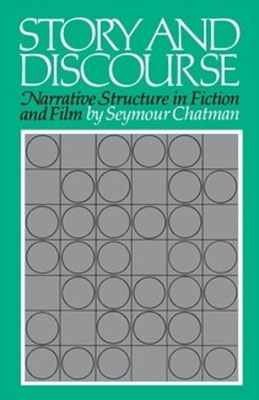
Seymour Chatman
Introduces and examines story and discourse: Narrative structure in fiction and film, offering perspectives relevant to narratology and cognitive literary studies.
Gerald Prince
Introduces and examines narratology: The form and functioning of narrative, offering perspectives relevant to narratology and cognitive literary studies.
Richard Andrews (ed.)
Introduces and examines narrative and Argument, offering perspectives relevant to narratology and cognitive literary studies.
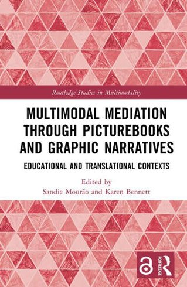
Sandie Mourão and Karen Bennett (eds.)
Book detailsConsiders how picturebooks and graphic narratives mediate meaning in educational settings.
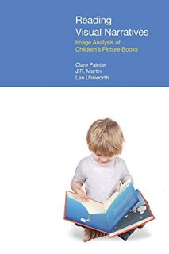
Clare Painter, James R. Martin and Len Unsworth
A social-semiotic framework for the analysis of visual storytelling in picturebooks.
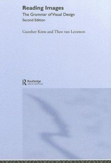
Gunther Kress and Theo van Leeuwen
Third edition of a social-semiotic framework for analysing images and visual composition.
Book details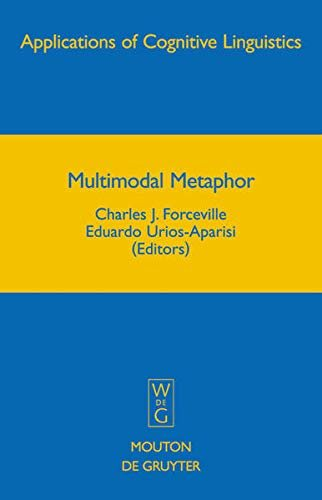
Charles J. Forceville and Eduardo Urios-Aparisi (eds.)
Examines how metaphors are conveyed through combinations of modes.
Book details
Elisabeth El Refaie
Explores embodied visual metaphor in graphic narratives about illness.
Book details
Len Unsworth
Connects multimodal text analysis with literacy teaching across subjects.
Book details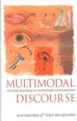
Gunther Kress and Theo van Leeuwen
A framework for examining how multiple modes contribute to communication.
Book detailsRoland Barthes
Introduces and examines image, music, text, offering perspectives relevant to multimodality and social semiotics.
Meriel Bloor and Thomas Bloor
Introduces and examines practice of critical discourse analysis, offering perspectives relevant to multimodality and social semiotics.
Daniel Chandler
Introduces and examines semiotics: The basics, offering perspectives relevant to multimodality and social semiotics.
Norman Fairclough
Introduces and examines critical discourse analysis: The critical study of language, offering perspectives relevant to multimodality and social semiotics.
Norman Fairclough
Examines relationships between language, discourse, institutions and social power.
Roger Fowler, Bob Hodge, Gunther Kress and Tony Trew
Introduces and examines language and control, offering perspectives relevant to multimodality and social semiotics.
James Paul Gee
Introduces and examines introduction to discourse analysis: Theory and method, offering perspectives relevant to multimodality and social semiotics.
Jan Grue
Introduces and examines disability and discourse analysis, offering perspectives relevant to multimodality and social semiotics.
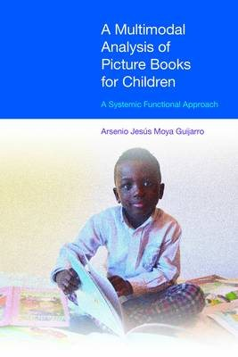
A. Jesús Moya Guijarro
Introduces and examines multimodal analysis of picture books for children, offering perspectives relevant to multimodality and social semiotics.
M. A. K. Halliday and Christian M. I. M. Matthiessen
Introduces and examines halliday’s Introduction to Functional Grammar, offering perspectives relevant to multimodality and social semiotics.
Jenny Kidd
Explores how cultural meanings are constructed and circulated through representational practices.
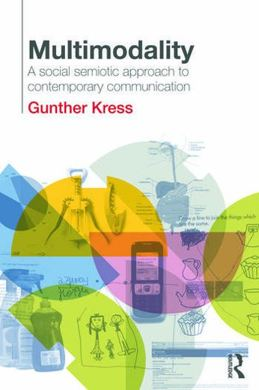
Gunther Kress
Introduces and examines multimodality: A social semiotic approach to contemporary communication, offering perspectives relevant to multimodality and social semiotics.
David Machin
Introduces and examines introduction to multimodal analysis, offering perspectives relevant to multimodality and social semiotics.
Brian Paltridge
Introduces and examines discourse analysis: An introduction, offering perspectives relevant to multimodality and social semiotics.
Rebecca Rogers (ed.)
Introduces and examines introduction to critical discourse analysis in education, offering perspectives relevant to multimodality and social semiotics.
Rebecca Rogers and Melissa Wetzel
Introduces and examines designing critical literacy education through critical discourse analysis: Pedagogical and research tools for teacher-researchers, offering perspectives relevant to multimodality and social semiotics.
Theo van Leeuwen
Introduces and examines introducing social semiotics, offering perspectives relevant to multimodality and social semiotics.
Theo van Leeuwen
Introduces and examines discourse and Practice: New Tools for Critical Discourse Analysis, offering perspectives relevant to multimodality and social semiotics.
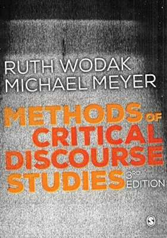
Ruth Wodak and Michael Meyer
Introduces and examines methods of critical discourse studies, offering perspectives relevant to multimodality and social semiotics.
Vijay K. Bhatia, John Flowerdew and Rodney H. Jones (eds.)
Introduces and examines advances in Discourse Studies, offering perspectives relevant to multimodality and social semiotics.
Stuart Hall (ed.)
Introduces and examines representation: Cultural Representations and Signifying Practices, offering perspectives relevant to multimodality and social semiotics.
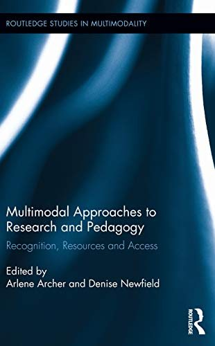
Arlene Archer and Denise Newfield (eds.)
Introduces and examines multimodal Approaches to Research and Pedagogy: Recognition, Resources and Access, offering perspectives relevant to multimodality and social semiotics.
Ruth Wodak and Michael Meyer (eds.)
Introduces and examines methods of Critical Discourse Analysis, offering perspectives relevant to multimodality and social semiotics.
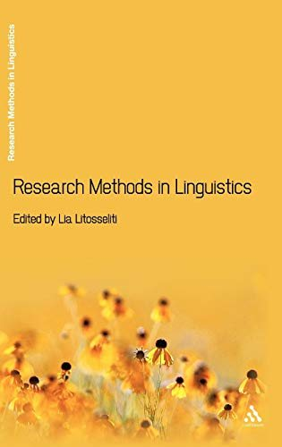
Lia Litosseliti (ed.)
Introduces and examines research Methods in Linguistics, offering perspectives relevant to multimodality and social semiotics.
Rosa Tabernero Sala (ed.)
Book detailsStudies children’s reading practices and the mediation of literary texts.
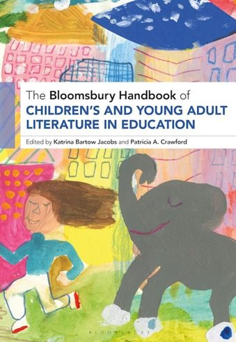
Katrina Bartow Jacobs and Patricia Crawford (eds.)
Book detailsSurveys research, teaching and learning with children’s and young adult literature.
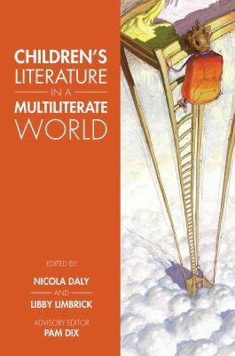
Nicola Daly and Libby Limbrick (eds.); Pam Dix (advisory ed.)
Book detailsAn international collection on children’s literature, literacy, multilingualism and intercultural understanding.

Lawrence R. Sipe
Drawing on classroom read-alouds, Sipe examines how young children interpret picturebooks through talk, play and connections to other stories. The classroom examples offer a starting point for planning book discussions.
Book detailsLester L. Laminack · Katie Kelly
Provides classroom approaches for discussing difference and considering how literary reading can inform action.
Book detailsRichard Andrews
Examines overlapping rhythms in music, literary forms and social life.
Book detailsRichard Andrews
Studies the visual, verbal and formal features of poetry, with attention to rhythm, imagery and framing.
Book detailsRichard Andrews
Develops ways to analyse free-verse rhythm through the line, additive patterns and performance.
Book details
Richard Andrews
Reads poetic form through bodily movement, spatial arrangement and the teaching of poetry.
Book detailsRichard Andrews
Reconsiders literacy and communication across media and in the English curriculum.
Book detailsRichard Andrews
Uses argumentation theory to examine teaching and academic writing in higher education.
Book detailsRichard Andrews
Develops a theory of rhetoric that accounts for communication across modes and media.
Book detailsSarah McGeown
Connects research on children’s reading motivation and engagement with classroom practice.
Book detailsTeresa Cremin and Sarah McGeown (eds.)
International research on reading for pleasure and its implications for education.
Book detailsSarah McGeown, Emily Oxley and the Love to Read team
Open practitioner programme for supporting children’s motivation to read.
Book detailsRachel O’Neill
A practitioner book on using STASS to track spoken language development in deaf children.
Book detailsMichele Friedner, Rachel O’Neill and Kristin Snoddon (eds.)
Studies responsibility, professional relationships and ethics in deaf education.
Book details
Teresa Cremin
Third edition on creative approaches to teaching primary English.
Book detailsIntroduces and examines teaching English Creatively, offering perspectives relevant to literacy, reading and language education.
Teresa Cremin, Marilyn Mottram, Fiona M. Collins, Sacha Powell and Kimberly Safford
Research on teachers’ reading lives and the development of classroom reading communities.
Book detailsTeresa Cremin, Helen Hendry, Lucy Rodriguez Leon and Natalia Kucirkova (eds.)
Research-informed accounts of how teachers build communities of readers.
Book detailsTeresa Cremin and Debra Myhill
Examines writing identities and the classroom conditions that nurture writing.
Book detailsTeresa Cremin, Rosie Flewitt, Ben Mardell and Joan Swann (eds.)
Research on young children’s storytelling and its role in language and literacy development.

Teresa Cremin, Helen Hendry and Anna Harrison (eds.)
Fifth edition of a guide to primary teaching, including English and literacy.
Book detailsKaren Coats
Connects the aesthetics of children’s books with the development of reading and multimodal literacies.
Book detailsKarin Murris
Connects picturebook inquiry with posthumanist approaches to childhood and education.
Book detailsKarin Murris and Joanna Haynes (eds.)
Explores posthumanist approaches to reading, learning and classroom research.
Book detailsDorota Michułka
Polish-language study of the history and practice of literary education in schools.
Book detailsRobin Alexander
Introduces and examines towards dialogic teaching: Rethinking classroom talk, offering perspectives relevant to literacy, reading and language education.
Robin Alexander
Introduces and examines dialogic teaching companion, offering perspectives relevant to literacy, reading and language education.
Gert Biesta
Introduces and examines world-centred education: A view for the present, offering perspectives relevant to literacy, reading and language education.
Maria José Botelho and Masha Kabakow Rudman
Introduces and examines critical multicultural analysis of children’s literature, offering perspectives relevant to literacy, reading and language education.
Centre for Literacy in Primary Education
Introduces and examines representation in Children’s Literature: Reflecting Realities in the Classroom, offering perspectives relevant to literacy, reading and language education.
Hilary Janks
Introduces and examines literacy and Power, offering perspectives relevant to literacy, reading and language education.
Ingrid Johnston and Joyce Bainbridge
Introduces and examines reading diversity through Canadian picture books: Preservice teachers explore issues of identity, ideology, and pedagogy, offering perspectives relevant to literacy, reading and language education.
Megan Dowd Lambert
Introduces and examines reading picture books with children: How to shake up storytime and get kids talking about what they see, offering perspectives relevant to literacy, reading and language education.
Christine Leland, Mitzi Lewison and Jerome C. Harste
Introduces and examines teaching children’s literature: It’s critical!, offering perspectives relevant to literacy, reading and language education.
Li Li
Introduces and examines language teacher cognition: A sociocultural perspective, offering perspectives relevant to literacy, reading and language education.
Fiona Maine
Introduces and examines dialogic readers: Children talking and thinking together about visual texts, offering perspectives relevant to literacy, reading and language education.
Neil Mercer and Karen Littleton
Introduces and examines dialogue and the development of Children’s thinking: A Sociocultural approach, offering perspectives relevant to literacy, reading and language education.
Mary Roche
Introduces and examines developing children’s critical thinking through picturebooks, offering perspectives relevant to literacy, reading and language education.
Jean Rudduck and Julia Flutter
Introduces and examines how to improve your school: Giving pupils a voice, offering perspectives relevant to literacy, reading and language education.
Alyson Simpson
Introduces and examines use of children’s literature in teaching: A study of politics and professionalism within teacher education, offering perspectives relevant to literacy, reading and language education.
Margaret Vaughn and Dixie D. Massey
Introduces and examines teaching with children’s literature: Theory to practice, offering perspectives relevant to literacy, reading and language education.
Lev Semyonovich Vygotsky
Introduces and examines mind in society: Development of higher psychological processes, offering perspectives relevant to literacy, reading and language education.
Angie Zapata
Introduces and examines deepening Student Engagement with Diverse Picturebooks: Powerful Classroom Practices for Elementary Teachers, offering perspectives relevant to literacy, reading and language education.
Bruce Menchetti
Read onlineIntroduces and examines teacher’s Guide to Using Literature to Promote Inclusion of People with Disabilities, offering perspectives relevant to literacy, reading and language education.
Dana L. Fox and Kathy G. Short (eds.)
Introduces and examines stories Matter: The Complexity of Cultural Authenticity in Children’s Literature, offering perspectives relevant to literacy, reading and language education.
Deborah A. Wooten, Lauren Aimonette Liang and Bernice E. Cullinan (eds.)
Anne van Kleeck, Steven A. Stahl and Eurydice B. Bauer (eds.)
Introduces and examines on Reading Books to Children: Parents and Teachers, offering perspectives relevant to literacy, reading and language education.
Sylvia Pantaleo
Book detailsExamines how pupils respond to contemporary picturebooks with complex visual and narrative structures.

Frank Serafini
Introduces methods for reading multimodal texts and teaching visual literacy.
Book details
Evelyn Arizpe, Kate Noble and Morag Styles
Book detailsIntroduces and examines children Reading Pictures: New Contexts and Approaches to Picturebooks, offering perspectives relevant to visual literacy and reader response.

Barbara Zulandt Kiefer
Connects children’s responses to picturebooks with the development of aesthetic understanding.
Book details
Janet Evans (ed.)
Studies how children discuss and respond to picturebook images and narratives.
Book detailsÅse Marie Ommundsen, Gunnar Haaland and Bettina Kümmerling-Meibauer (eds.)
International studies of the role of challenging picturebooks in literacy and literature education.
Book detailsBettina Kümmerling-Meibauer, Jörg Meibauer, Kerstin Nachtigäller and Katharina J. Rohlfing (eds.)
Investigates what children can learn from print and digital picturebooks.
Book detailsJoanna Haynes and Karin Murris
Uses picturebooks to support philosophical inquiry with children and examine how adults listen to their ideas.
Book detailsMolly Bang
Introduces and examines picture this: How pictures work, offering perspectives relevant to visual literacy and reader response.
John Berger
Examines how visual conventions and social contexts influence the interpretation of images.
Nick Lacey
Introduces and examines image and representation: Key concepts in media studies, offering perspectives relevant to visual literacy and reader response.
Frank Serafini
Introduces and examines beyond the visual: An introduction to researching multimodal phenomena, offering perspectives relevant to visual literacy and reader response.
Lawrence R. Sipe and Sylvia Pantaleo (eds.)
Examines experiments with narrative voice, parody and the physical form of the picturebook.
Book detailsEvelyn Arizpe, Teresa Colomer and Carmen Martínez-Roldán
Book detailsIntroduces and examines visual Journeys Through Wordless Narratives: An International Inquiry With Immigrant Children and The Arrival, offering perspectives relevant to wordless picturebooks.
Anita Ghai
Places disability in the context of Indian social, political and cultural life.
Book detailsTobin Siebers
Situates disability within debates about modern art, form and aesthetic value.
Book detailsAto Quayson
Examines how disability representations unsettle the conventions through which readers interpret a text.
Book detailsDavid T. Mitchell · Sharon L. Snyder
Examines how narratives rely on disability as a device for characterisation and plot.
Book detailsRosemarie Garland-Thomson
Explores staring as a social relationship and examines its role in encounters with visible disability.
Book details
Dan Goodley
An introduction to disability scholarship across education, activism and the social sciences.
Book details
Rosemarie Garland Thomson
Examines how American literature and culture construct disability and bodily difference through representation.
Book detailsAlison Kafer
Develops a political and relational account of disability and asks whose lives are imagined in collective futures.
Book details
Clare Barker and Stuart Murray (eds.)
An introduction to literary disability studies across genres, historical periods and critical approaches.
Book detailsJohn Quicke
Book detailsIntroduces and examines disability in Modern Children’s Fiction, offering perspectives relevant to disability, gender and identity.
Ria Cheyne
Book detailsIntroduces and examines disability, Literature, Genre: Representation and Affect in Contemporary Fiction, offering perspectives relevant to disability, gender and identity.
Danielle Price
Book detailsIntroduces and examines speech and Silence in Contemporary Children’s Literature, offering perspectives relevant to disability, gender and identity.
Tricia Clasen and Holly Hassel (eds.)
Book detailsIntroduces and examines gender(ed) Identities: Critical Rereadings of Gender in Children’s and Young Adult Literature, offering perspectives relevant to disability, gender and identity.

B. J. Epstein and Elizabeth L. Chapman (eds.)
Book detailsIntroduces and examines international LGBTQ+ Literature for Children and Young Adults, offering perspectives relevant to disability, gender and identity.
A. Jesús Moya-Guijarro and Eija Ventola (eds.)
Uses multimodal analysis to examine how picturebooks challenge gender stereotypes.
Book detailsGiuliana Fenech (ed.)
Essays on childhood citizenship, agency and activism in literature and culture.
Book detailsSusan Baglieri and Priya Lalvani
Introduces and examines undoing ableism: Teaching about disability in K–12 classrooms, offering perspectives relevant to disability, gender and identity.
Joan K. Blaska
Introduces and examines using children’s literature to learn about disabilities and illness, offering perspectives relevant to disability, gender and identity.
Rosi Braidotti
Introduces and examines posthuman, offering perspectives relevant to disability, gender and identity.
Fiona Kumari Campbell
Introduces and examines contours of ableism: The production of disability and abledness, offering perspectives relevant to disability, gender and identity.
James I. Charlton
Introduces and examines nothing about us without us: Disability oppression and empowerment, offering perspectives relevant to disability, gender and identity.
Ria Cheyne
Introduces and examines disability, literature, genre, offering perspectives relevant to disability, gender and identity.
G. Thomas Couser
Introduces and examines signifying bodies: Disability in contemporary life writing, offering perspectives relevant to disability, gender and identity.
Lennard J. Davis
Introduces and examines enforcing normalcy: Disability, deafness, and the body, offering perspectives relevant to disability, gender and identity.
Lennard J. Davis
Introduces and examines enabling acts: The hidden story of how the Americans with Disabilities Act gave the largest US minority its rights, offering perspectives relevant to disability, gender and identity.
Lennard J. Davis (ed.)
Introduces and examines disability studies reader, offering perspectives relevant to disability, gender and identity.
Lennard J. Davis
Introduces and examines bending over backwards: Disability, dismodernism, and other difficult positions, offering perspectives relevant to disability, gender and identity.
Patricia A. Dunn
Introduces and examines disabling characters: Representations of disability in young adult literature, offering perspectives relevant to disability, gender and identity.
Tina Taylor Dyches and Mary Anne Prater
Dan Goodley
Introduces and examines dis/ability studies: Theorising disablism and ableism, offering perspectives relevant to disability, gender and identity.
Dan Goodley
Introduces and examines disability and other human questions, offering perspectives relevant to disability, gender and identity.
Alice Hall
Introduces and examines literature and disability, offering perspectives relevant to disability, gender and identity.
Beth A. Haller
Introduces and examines representing disability in an ableist world: Essays on mass media, offering perspectives relevant to disability, gender and identity.
Petra Kuppers
Introduces and examines studying disability arts and culture: An introduction, offering perspectives relevant to disability, gender and identity.
Joseph P. Lash
Introduces and examines helen and Teacher: The Story of Helen Keller and Anne Sullivan Macy, offering perspectives relevant to disability, gender and identity.
Simi Linton
Introduces and examines claiming disability: Knowledge and identity, offering perspectives relevant to disability, gender and identity.
Rebecca Mallett and Katherine Runswick-Cole
Introduces and examines approaching disability: Critical issues and perspectives, offering perspectives relevant to disability, gender and identity.
McRuer, R
Introduces and examines crip theory: Cultural signs of queerness and disability, offering perspectives relevant to disability, gender and identity.
Abbye E. Meyer
Introduces and examines from wallflowers to bulletproof families: The power of disability in young adult narratives, offering perspectives relevant to disability, gender and identity.
David T. Mitchell and Sharon L. Snyder
Introduces and examines biopolitics of Disability: Neoliberalism, Ablenationalism, and Peripheral Embodiment, offering perspectives relevant to disability, gender and identity.
Michael Oliver
Introduces and examines social work and disabled people, offering perspectives relevant to disability, gender and identity.
Michael Oliver
Introduces and examines understanding disability: From theory to practice, offering perspectives relevant to disability, gender and identity.
Michael Oliver and Colin Barnes
Introduces and examines new politics of disablement, offering perspectives relevant to disability, gender and identity.
Michael Pickering
Introduces and examines stereotyping: The politics of representation, offering perspectives relevant to disability, gender and identity.
Charles A. Riley
Introduces and examines disability and the Media: Prescriptions for Change, offering perspectives relevant to disability, gender and identity.
Kathy Saunders
Introduces and examines happy ever afters: A storybook guide to teaching children about disability, offering perspectives relevant to disability, gender and identity.
Sami Schalk
Introduces and examines bodyminds reimagined: (Dis)ability, race, and gender in Black women’s speculative fiction, offering perspectives relevant to disability, gender and identity.
Tom Shakespeare
Introduces and examines disability rights and wrongs revisited, offering perspectives relevant to disability, gender and identity.
Tom Shakespeare
Introduces and examines disability: The basics, offering perspectives relevant to disability, gender and identity.
Margrit Shildrick
Introduces and examines dangerous discourses of disability, subjectivity and sexuality, offering perspectives relevant to disability, gender and identity.
Henri-Jacques Stiker
Introduces and examines history of disability, offering perspectives relevant to disability, gender and identity.
Carol Thomas
Introduces and examines female forms: Experiencing and understanding disability, offering perspectives relevant to disability, gender and identity.
Tanya Titchkosky
Introduces and examines disability, self, and society, offering perspectives relevant to disability, gender and identity.
Tanya Titchkosky
Introduces and examines reading and writing disability differently: The textured life of embodiment, offering perspectives relevant to disability, gender and identity.
Sally Tomlinson
Introduces and examines sociology of special and inclusive education: Exploring the manufacture of inability, offering perspectives relevant to disability, gender and identity.
Alice Wong (ed.)
Introduces and examines disability visibility: First-person stories from the twenty-first century, offering perspectives relevant to disability, gender and identity.
Nick Watson, Alan Roulstone and Carol Thomas (eds.)
Introduces and examines routledge Handbook of Disability Studies, offering perspectives relevant to disability, gender and identity.
Dianne Pothier and Richard Devlin (eds.)
Introduces and examines critical Disability Theory: Essays in Philosophy, Politics, Policy, and Law, offering perspectives relevant to disability, gender and identity.
Katie Ellis, Rosemarie Garland-Thomson, Mike Kent and Rachel Robertson (eds.)
Paul Hunt (ed.)
Introduces and examines stigma: The Experience of Disability, offering perspectives relevant to disability, gender and identity.
Michael Rembis, Catherine Kudlick and Kim E. Nielsen (eds.)
Introduces and examines oxford Handbook of Disability History, offering perspectives relevant to disability, gender and identity.
Jerome E. Bickenbach, Franziska Felder and Barbara Schmitz (eds.)
Introduces and examines disability and the Good Human Life, offering perspectives relevant to disability, gender and identity.
Shelley L. Tremain (ed.)
Introduces and examines foucault and the Government of Disability, offering perspectives relevant to disability, gender and identity.
Further reading: The One in the Wheelchair: Dr Rebecca Butler on children’s books and disability.
Jamie Campbell Naidoo and Sarah Park Dahlen (eds.)
Book detailsExamines diverse literature for young people and its use in libraries and schools.
Christopher Kelen and Björn Sundmark (eds.)
Book detailsInvestigates how children’s literature and film construct national identity and belonging.
Blanka Grzegorczyk
Book detailsExamines how British children’s fiction engages with empire and the politics of race.
Ebony Elizabeth Thomas
Book detailsExamines racial representation in fantasy for young audiences and the responses of readers and fans.
Maya Socolovsky
Book detailsExamines representations of Latinx childhood and citizenship in picturebooks and fiction for young readers.
Blanka Grzegorczyk
Book detailsExplores how contemporary writing for young readers engages with postcolonialism and intersecting inequalities.
Carmen Santamaría-García and Eija Ventola (eds.)
Book detailsApplies multimodal methods to representations of migration in picturebooks.
Philip Nel
Examines racial stereotypes and structural racism in children’s literature, and argues for more diverse books.
Book detailsEmer O’Sullivan and Andrea Immel (eds.)
Traces how children’s literature represents cultural difference across periods and national traditions.
Book details
Macarena García-González
Examines how stories of migration and adoption shape ideas of belonging in contemporary Spain. García-González convened IRSCL 2021.
Book detailsVivian Yenika-Agbaw
Examines how African and Western writers represent youth in African societies and how colonial legacies shape those portrayals.
Book detailsVivian Yenika-Agbaw and Lindah Mhando (eds.)
Studies how young Africans are represented and how they construct identities through literature and popular culture.
Vivian Yenika-Agbaw, Ruth McKoy Lowery and Laretta Henderson (eds.)
Examines retellings of familiar tales and how they centre Black experiences across the diaspora.
Michał Borodo and Jorge Díaz-Cintas (eds.)
Book detailsSurveys translation for young audiences across literature, comics and screen media.
Esa Christine Hartmann and Áine McGillicuddy (eds.)
Book detailsExplores multilingual picturebooks across publishing, translation and educational contexts.
Emer O’Sullivan, Kimberley Reynolds and Rolf Romøren (eds.)
Book detailsAn edited scholarly collection on global and local perspectives in children’s literature.
Anna Kérchy and Björn Sundmark (eds.)
Book detailsExamines how children’s literature is translated and adapted across languages and media.
Smiljana Narančić Kovač (ed.)
Book detailsStudies the international circulation and reception of the Croatian children’s classic Hlapić.
Smiljana Narančić Kovač and Ivana Milković (eds.)
Book detailsResearch on translations of children’s literature from a Croatian perspective.
Riitta Oittinen, Anne Ketola and Melissa Garavini
Book detailsIntroduces and examines translating Picturebooks: Revoicing the Verbal, the Visual and the Aural for a Child Audience, offering perspectives relevant to multilingualism and translation.
Roderick McGillis (ed.)
Book detailsIntroduces and examines voices of the Other: Children’s Literature and the Postcolonial Context, offering perspectives relevant to multilingualism and translation.
Nicola Daly
Studies how picturebooks in Aotearoa New Zealand represent linguistic diversity and identity.
Book detailsEmer O’Sullivan; translated by Anthea Bell
A comparative framework for translation, circulation and the construction of international classics.
Book detailsEmer O’Sullivan
German-language study of the methods and scope of comparative children’s literature.
Book detailsHans-Heino Ewers, Gertrud Lehnert and Emer O’Sullivan (eds.)
German-language collection on intercultural exchange and comparative research in children’s literature.
Book details
Jane Doonan
A guide to close reading of picturebook images and their contribution to meaning.
Book detailsMartin Salisbury
A practical guide to illustrating children's books, from character design and visual storytelling to publication; originally published in 2004.
Book detailsMartin Salisbury
An international survey of contemporary approaches to children’s book illustration.
Book detailsMartin Salisbury and Morag Styles
Second edition on the history, design, illustration and creation of children’s picturebooks.
Book detailsMartin Salisbury
A collection of case studies in picturebook illustration, art and design.
Book details
Elina Druker and Bettina Kümmerling-Meibauer (eds.)
Studies photographic illustration, book design and genre across ten countries.
Book details
Elina Druker and Bettina Kümmerling-Meibauer (eds.)
Explores how avant-garde movements shaped experimental publication and visual storytelling for children.
Book detailsKaty Hessel
Introduces and examines story of Art Without Men, offering perspectives relevant to illustration, book design and visual art.
Syd Field
Introduces and examines definitive guide to screenwriting, offering perspectives relevant to illustration, book design and visual art.
Holly Johnson, Janelle Mathis and Kathy G. Short (eds.)
Applies critical content analysis to illustration and visual meaning in books for young readers.
Book details
Holly Johnson, Janelle Mathis and Kathy G. Short (eds.)
Shows how critical content analysis can interrogate perspective and power in youth literature.
Book detailsNorman Fairclough
Connects detailed textual analysis with social research and critical discourse analysis.
Book details
Virginia Braun and Victoria Clarke
A guide to reflexive thematic analysis for qualitative researchers.
Book detailsGillian Rose
Fifth edition of a guide to selecting and applying methods for the study of images.
Book detailsJustyna Deszcz-Tryhubczak and Macarena García-González (eds.)
Open-access research on children’s cultural participation, research ethics and relational approaches to childhood.
Book detailsAmerican Psychological Association
Introduces and examines publication manual of the American Psychological Association, offering perspectives relevant to research theories and methodologies.
Tom Clark, Liam Foster, Luke Sloan and Alan Bryman
Introduces and examines bryman’s social research methods, offering perspectives relevant to research theories and methodologies.
Louis Cohen, Lawrence Manion and Keith Morrison
Introduces and examines research Methods in Education, offering perspectives relevant to research theories and methodologies.
John W. Creswell and Cheryl N. Poth
Introduces and examines qualitative Inquiry and Research Design: Choosing Among Five Approaches, offering perspectives relevant to research theories and methodologies.
Michael Emmison and Philip Smith
Introduces and examines researching the Visual: Images, Objects, Contexts and Interactions in Social and Cultural Inquiry, offering perspectives relevant to research theories and methodologies.
Dawson R. Hancock, Bob Algozzine and Jae Hoon Lim
Introduces and examines doing case study research: A practical guide for beginning researchers, offering perspectives relevant to research theories and methodologies.
Huberman, A. M. & Miles, M. N. B
Introduces and examines innovation up close: How school improvement works, offering perspectives relevant to research theories and methodologies.
Allison Hurst
Read onlineIntroduces and examines introduction to Qualitative Research Methods: A Helpful Guide for Undergraduates and Graduate Students in the Social Sciences, offering perspectives relevant to research theories and methodologies.
Klaus Krippendorff
Introduces and examines content analysis: An introduction to its methodology, offering perspectives relevant to research theories and methodologies.
Yvonna S. Lincoln and Egon G. Guba
Introduces and examines naturalistic inquiry, offering perspectives relevant to research theories and methodologies.
Joseph A. Maxwell
Introduces and examines qualitative research design: An interactive approach, offering perspectives relevant to research theories and methodologies.
Sharan B. Merriam and Elizabeth J. Tisdell
Introduces and examines qualitative research: A guide to design and implementation, offering perspectives relevant to research theories and methodologies.
Miles, M. N. B. and Huberman, A. M
Introduces and examines qualitative data analysis: An expanded sourcebook, offering perspectives relevant to research theories and methodologies.
Michael Quinn Patton
Introduces and examines qualitative research & evaluation methods: Integrating theory and practice, offering perspectives relevant to research theories and methodologies.
Saldaña, J
Introduces and examines fundamentals of qualitative research, offering perspectives relevant to research theories and methodologies.
Johnny Saldaña
Introduces and examines coding Manual for Qualitative Researchers, offering perspectives relevant to research theories and methodologies.
David Silverman
Introduces and examines doing qualitative research, offering perspectives relevant to research theories and methodologies.
Robert E. Stake
Introduces and examines art of case study research, offering perspectives relevant to research theories and methodologies.
Robert A. Stebbins
Book detailsIntroduces and examines exploratory Research in the Social Sciences, offering perspectives relevant to research theories and methodologies.
Robert K. Yin
Introduces and examines case study Research and applications, offering perspectives relevant to research theories and methodologies.
Taylor Carman
Introduces and examines heidegger’s analytic: Interpretation, discourse and authenticity in Being and Time, offering perspectives relevant to research theories and methodologies.
James W. Carey
John Dewey
Introduces and examines human nature and conduct, offering perspectives relevant to research theories and methodologies.
Michel Foucault
Introduces and examines discipline and punish: The birth of the prison, offering perspectives relevant to research theories and methodologies.
Paulo Freire
Introduces and examines pedagogy of the oppressed, offering perspectives relevant to research theories and methodologies.
Martin Heidegger · Translated by Joan Stambaugh, revised by Dennis J. Schmidt
David M. Fetterman (ed.)
Introduces and examines qualitative Approaches to Evaluation in Education, offering perspectives relevant to research theories and methodologies.
Jennifer Cyr and Sara Wallace Goodman (eds.)
Introduces and examines doing Good Qualitative Research, offering perspectives relevant to research theories and methodologies.
Corey W. Johnson and Diana C. Parry (eds.)
Introduces and examines fostering Social Justice through Qualitative Inquiry: A Methodological Guide, offering perspectives relevant to research theories and methodologies.
Alyson Simpson and Fred Dervin (eds.)
Introduces and examines meaning of Criticality in Education Research, offering perspectives relevant to research theories and methodologies.
Colin Elman, John Gerring and James Mahoney (eds.)
Introduces and examines production of Knowledge: Enhancing Progress in Social Science, offering perspectives relevant to research theories and methodologies.
John W. Creswell and J. David Creswell
Introduces and examines research Design: Qualitative, Quantitative, and Mixed Methods Approaches, offering perspectives relevant to research theories and methodologies.
Interdisciplinary reading for research on bereavement, visual art and embodied spectatorship.
Dennis Klass · Phyllis R. Silverman · Steven L. Nickman (editors)
Brings together studies of how bereaved people sustain relationships with those who have died. This collection informs the study of bereavement narratives.
Book detailsSusan Leigh Foster
Traces how ideas about bodily movement and kinesthetic empathy have shaped the encounter between dancers and spectators.
Book detailsJill Bennett
Examines the ways contemporary art can engage viewers with the affective dimensions of trauma.
Book detailsClaudia Nelson, Elisabeth Wesseling and Andrea Mei-Ying Wu (eds.)
Book detailsSurveys children’s literature and culture across disciplines and international contexts.

Matthew O. Grenby and Andrea Immel (eds.)
Book detailsIntroduces and examines cambridge Companion to Children’s Literature, offering perspectives relevant to international handbooks and companions.
Karen Coats, Deborah Stevenson and Vivian Yenika-Agbaw (eds.)
Book detailsIntroduces and examines companion to Children’s Literature, offering perspectives relevant to international handbooks and companions.
David Rudd (ed.)
Book detailsIntroduces and examines routledge Companion to Children’s Literature, offering perspectives relevant to international handbooks and companions.

Bettina Kümmerling-Meibauer (ed.)
An international handbook covering picturebook forms, contexts and research approaches.
Book detailsJohn Stephens, Celia Abicalil Belmiro, Alice Curry, Li Lifang and Yasmine Motawy (eds.)
Book detailsEmer O’Sullivan
A reference guide to major authors, works and concepts across the history of writing for young readers.
Book detailsShelby A. Wolf, Karen Coats, Patricia Enciso and Christine A. Jenkins (eds.)
Brings together research from literary studies, education and library and information science.
Book detailsEdited by Clémentine Beauvais and Maria Nikolajeva
An edited research companion bringing together approaches to children’s literature, its forms, histories and critical debates. Read individual chapters as distinct scholarly arguments rather than a single unified account.
Book detailsKathy Hall, Teresa Cremin, Barbara Comber and Luis C. Moll (eds.)
Introduces and examines international Handbook of Research on Children’s Literacy, Learning, and Culture, offering perspectives relevant to international handbooks and companions.
Victor Jupp (ed.)
Introduces and examines sAGE Dictionary of Social Research Methods, offering perspectives relevant to international handbooks and companions.
Janet M. Bennett (ed.)
Introduces and examines sAGE Encyclopedia of Intercultural Competence, offering perspectives relevant to international handbooks and companions.
Alex C. Michalos (ed.)
Introduces and examines encyclopedia of Quality of Life and Well-Being Research, offering perspectives relevant to international handbooks and companions.
Michael A. Peters (ed.)
Introduces and examines encyclopedia of Teacher Education, offering perspectives relevant to international handbooks and companions.
Albert J. Mills, Gabrielle Durepos and Elden Wiebe (eds.)
Introduces and examines encyclopedia of Case Study Research, offering perspectives relevant to international handbooks and companions.
Carol A. Chapelle (ed.)
Introduces and examines encyclopedia of Applied Linguistics, offering perspectives relevant to international handbooks and companions.
Deborah Schiffrin, Deborah Tannen and Heidi E. Hamilton (eds.)
Introduces and examines handbook of Discourse Analysis, offering perspectives relevant to international handbooks and companions.
Ken Hyland and Brian Paltridge (eds.)
Introduces and examines continuum Companion to Discourse Analysis, offering perspectives relevant to international handbooks and companions.
John T. E. Richardson (ed.)
Introduces and examines handbook of Qualitative Research Methods for Psychology and the Social Sciences, offering perspectives relevant to international handbooks and companions.
Paul Atkinson, Sara Delamont, Alexandru Cernat, Joseph W. Sakshaug and Richard A. Williams (eds.)
Selected covers from publishers. Additional edition covers supplied by Open Library where available.
↑Studies of Australian, Canadian, Indian and South African children’s literatures widen the bibliography’s geographical frame. These are contextual and critical studies, rather than claims that any one book represents a whole region.
Nina Goga, Lykke Guanio-Uluru, Bjørg Oddrun Hallås and Aslaug Nyrnes (eds.)
Book detailsBrings Nordic perspectives to environmental questions in children’s literature and culture.
Maureen A. Farrell and Robert A. Davis (eds.)
Book detailsSurveys Scottish children’s literature across languages, genres and historical periods.
Clare Bradford
Comparative study of colonialism and Indigenous representation in children’s literature, including Australia, Canada and New Zealand.
Book detailsMavis Reimer (editor)
Essays examining home, belonging and national narratives in Canadian children’s literature.
Book detailsMichelle Superle
Examines English-language Indian children’s fiction through questions of nation, cultural identity, gender and childhood.
Book detailsElwyn Jenkins
Places South African English children’s literature in its literary and cultural history, from the nineteenth century into the early twenty-first.
Book details